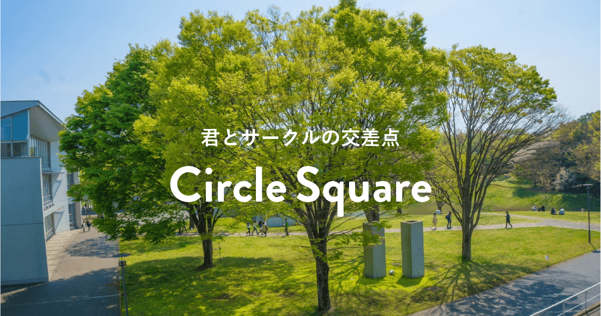
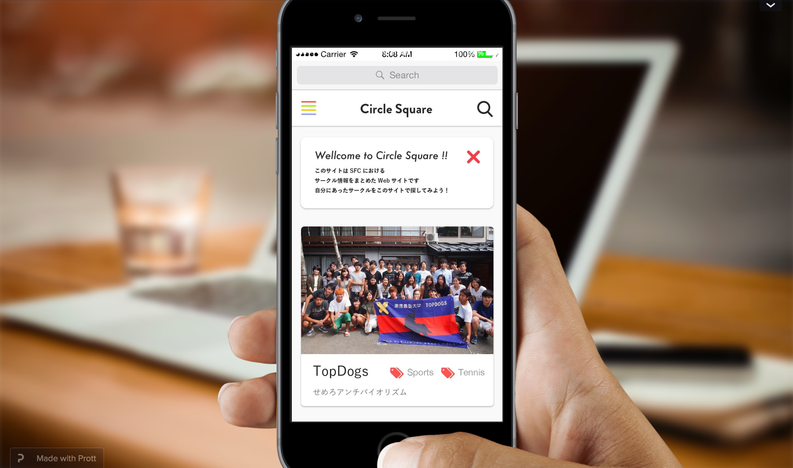
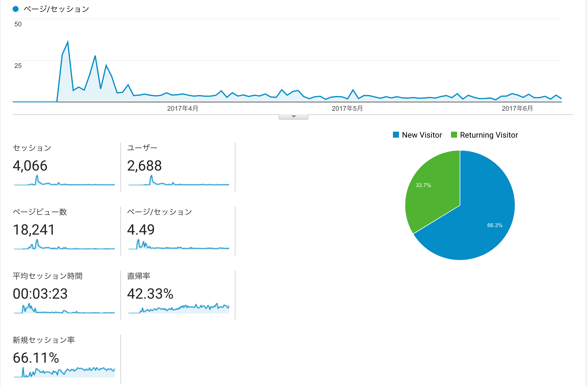

公開年月日 : 2017年3月23日
公開年月日 : 2017年3月23日
サイト名 : Circle Square ［サークルスクエア］| SFC生のためのサークル情報サイト
サイトリンク : http://circle-square.sfc.keio.ac.jp/
制作期間 : 2ヶ月
制作構成人数 : チーム制作 (6名)
「君とサークルの交差点」というキャッチコピーのもと制作しました、サークル情報まとめサイトになります。
慶応義塾大学湘南藤沢キャンパスでは、これまでサークル情報を、学生団体が各サークルからお金を徴収し、"冊子"で公開していました。
しかしそこには、時間とお金というコストの問題と、その冊子がなければサークル情報が手に入らないというアクセスの問題がありました。
そこで、私たちは、この問題を解決すべく、Web上で誰もがたやすく情報にアクセスできるよう、サークル情報まとめサイトを作成しました。
新入生が男女問わず使ってもらえるよう、ポップな４色の色合いをアクセントカラーにして白を基調として配色でデザインしました。

http://circle-square.sfc.keio.ac.jp/about
DesignerとEngineerの技術の橋渡しをするEngineer Leaderとして担当しました。
具体的には、デザイナーチームがデザインモックアップをエンジニアチームにあげる際に、デザインガイドラインをまとめ、コーディングしやすいように指示を出しました。
またエンジニアチームも、デザインの会議に参加ができるよう、Prottというサービスを用いてプロトタイプを作成してコミュニケーションをとりました。エンジニアの観点からデザイナーチームにUIの提案ができました。
エンジニア面では、円滑にエンジニアリングの作業ができるよう、コーディング規約を定め、Githubレポジトリを使い開発を行いました。
このように、新歓期前という短い制作期間の中で制作を終えるために、エンジニアチームとデザイナーチーム全体を俯瞰して指示を出していました。

Prott
『プロトタイピング』 → Prott, Adobe XD, Adobe Illustrator
『開発環境・プログラミング言語』Wordpress, PHP, html, css, js, ライブラリ諸々
『開発バージョン管理』 → Github
『アナティクス』 → Google Analytics
『SEO』 → Google Web Master Tool
『コミュニケーションツール』 → Slack
18,000PV達成！
毎年900人近い新入生が入学する中、2600人以上のユーザーに使っていただきました！
様々なサークルからサークル掲載のお願いのご連絡を多くいただき、日吉や三田など違うキャンパスのサークル情報まで掲載のお願いが届くようになりました。

2017年6月現在